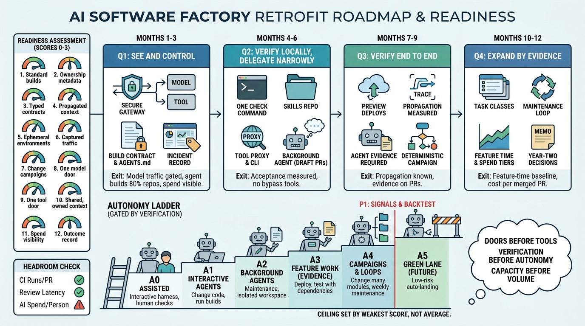

Part IV — PRACTICE: Measuring and Leading
The Retrofit Playbook: What to Copy If You Are Not Uber

Image generated by Google Gemini (gemini-3-pro-image-preview)
Part IV — PRACTICE: Measuring and Leading

Image generated by Google Gemini (gemini-3-pro-image-preview)